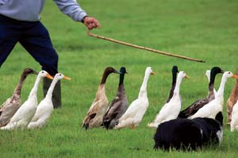

The Truth About The Animal Id Plan
The federal National Animal Identification System (NAIS) is promoted as pro-health, but actually threatens healthy farming practices.
By Jack Kittredge
June/July 2007
If you’ve visited your local feed dealer or veterinarian recently, or read any of the dozens of livestock or poultry magazines targeted at small farmers, you probably already know what “NAIS” stands for. The National Animal Identification System is arguably the most hated federal program in rural America. The plan, released in draft form in April 2005 by the U.S. Department of Agriculture (USDA), proposed sweeping changes in the way animals are managed on small farms and homesteads. It called for registration of livestock “premises” and individual animals in national databases, and for tracking animal movements.
The draft called for all places where even a single livestock animal is held (farm, back yard, veterinarian office, fairground and slaughterhouse) to be given a unique seven-digit number and registered in a national database, along with its Global Positioning System coordinates and the name, phone number and address of the owner. It further proposed that every livestock animal (including cows, horses, llamas, pigs, sheep, goats, ducks, geese, turkeys and chickens) be individually registered and tagged with a 15-digit number - preferably via a Radio Frequency Identification Device (RFID), often called a chip. An exception would be made for animals raised as a group for their entire life cycle and never separated (such as birds or hogs in confinement settings), which could be assigned a group or lot number. Last, the draft proposed that the movements of any animal leaving the home place would have to be reported to the national database within 48 hours.
The 2005 draft plan stated that the program would be mandatory, phased in over several years. In November 2006, however, the USDA proclaimed that the program would be “voluntary at the federal level.” This reversal came after an unprecedented outpouring of opposition from farmers and livestock owners across the country. Many opponents think the change is a tactical move in favor of more subtle methods to make everyone comply.
Horse owners were upset at the thought of having to report every trail ride. Backyard poultry raisers wondered where in a baby chick is the best place to implant an ID chip. Small farmers worried about how they could afford the chips, monitors, software and reporting systems necessary to comply.
ANIMAL ID VS. DISEASES
The USDA’s stated goal of their animal ID system is “to be able to identify all animals and premises that have had contact with a foreign or domestic animal disease of concern within 48 hours after discovery.” Yet the program is silent on how that information would be used to prevent or control disease outbreaks. In previous animal health programs that have required animal identification - such as brucellosis vaccination for cattle or culling for scrapie eradication among sheep - the program was targeted to a specific species of animal and a particular disease. The animal identification was needed and specifically tailored to indicate which cattle had been vaccinated or which sheep had been scrapie-free and for how long.
The animal ID program, however, is a one-size-fits-all program targeting many species of animals. It’s difficult to see how it can be useful against any specific disease. Among poultry, avian influenza is the most obvious disease threat. Yet it spreads so rapidly in confinement chicken facilities that an entire building - hundreds of thousands of birds - can be infected quickly, and it requires a much shorter response time than 48 hours. In the case of a disease with a long incubation period, such as bovine spongiform encephalopathy (aka mad cow disease), animal tracking may identify cows that shared the same location years ago. But control of the disease requires culling affected animals, and the only way to determine if an animal is affected is a lab test of brain tissue after death. It would be far easier and cheaper to simply test every cow upon slaughter, before releasing the beef into the food supply.
Mandatory livestock ID would do nothing to help control food-borne diseases. Cases of E. coli contamination, for instance, are associated with poor sanitation at processing plants, after the animal is dead and its identification is moot.
WHO’S BEHIND ANIMAL ID?
If the program does not serve the goals of disease prevention or control, then why is the USDA proposing it? To answer that, critics have looked to where the program originated, and whom it benefits.
According to the draft plan, in 2002 the National Institute of Animal Agriculture (NIAA) initiated meetings that led to the development of the ID plan. The NIAA, it turns out, is a private organization whose membership reads like a who’s who of agribusiness: Cargill, Monsanto, the National Livestock Producers Association, the National Pork Producers Council, the National Renderers Association, and veterinary medicine companies such as Pfizer and Schering Plough.
Manufacturers of animal ID and tracking systems, such as Cattle-Traq and Digital Angel, also are members. Their interests in such a program are pretty clear. No one knows exactly how many animals would be affected by mandatory animal ID, but starting with the nation’s 63 million hogs, 97 million cows, 300 million laying hens and 9 billion chickens for meat, the market is vast.
Other members of NIAA are meat producers, and their interest in the ID plan is harder to discern - until you understand their dependence on factory farming and exports.
Factory farming. These producers are not farmers in any normal sense. They are large corporations that raise, kill and process animals on a massive scale. The term “factory farm” has sometimes been applied to their operations, but more descriptive is the USDA’s jargon, “concentrated animal feeding operation,” or CAFO. These are huge facilities where animals are penned or caged by the thousands. Poultry and hogs are raised entirely indoors. Beef cattle are confined in feedlots. Feed grown elsewhere is brought in and distributed to the animals mechanically; manure is scraped or pumped out and stored in large lagoons or discharged into waterways. Systems are automatic and computer controlled; animals are identified by individual or by lot; everything is monitored. Thus to factory farm owners, the animal ID requirements are not an additional burden - these costs are already a part of doing business.
Meat exporting. These producers sell much of their product into export markets. Before the 2003 case of mad cow in the United States, Japan imported more than 400,000 tons of U.S. beef annually. This was high-value beef, too, priced 33 percent per pound higher than beef exported to other nations. After the mad cow discovery, Japan shut down imports of U.S. beef for two years. Since 2003, because of this disease concern, U.S. beef producers have lost more than $5 billion in sales to the Japanese. The big corporations that dominate U.S. meat production have a vital interest in the perception in export markets that our meat is disease-free. A program such as the animal ID plan makes the United States appear serious about preventing disease, whatever the reality.
WHAT DO SMALL FARMERS THINK?
So, if the federal animal ID program is designed in a way that imposes few new costs on factory farms and bolsters their export market by giving the perception of safety to foreign meat buyers, how does the program sit with small farmers and backyard animal raisers? Very badly, as it turns out, for several reasons.
It’s too expensive. Whereas factory farms can take advantage of group or lot registration, and already are monitoring and tracking animals, the federal program would impose serious new costs for most small livestock operations. The USDA’s draft plan avoided estimating the costs to producers of implementing the system. But some back-of-the-envelope calculations, based largely on existing devices for cattle identification, give us an idea of the potential costs. ID chips sell for between $1.50 and $3 each, based on quantity. A simple machine to read the tags could cost as little as $100 to $200, while more sophisticated ones with computers and software attached could range from $500 to $2,000. Reporting animal movements would probably be done on the Internet, and would involve costs for Internet access, subscription fees to access the database, and time to do the work. One study suggests these might collectively cost $900 to $1,000 per year. So for a small farm with a herd of 50 cattle, the cost might be $1,500.
One difficulty with these costs for small farmers is that so much of the expense is fixed. Whether you have one cow or 20, you will still need a reader, Internet access and database subscription. Even if you do the monitoring and reporting yourself, this can easily cost $500. The situation is even worse for someone raising smaller, less valuable livestock. Amortized over a few goats or a flock of laying hens, $500 can easily exceed the value of the animals.
It’s too intrusive. Some small farmers object to the intrusiveness of the ID program, feeling they should be free to raise animals much as their ancestors did, unimpeded by government. Others feel it infringes on their constitutional or property rights. Still others have religious beliefs that prevent their using electricity, computers, telephones or other aspects of modern technology that would be needed to implement the program.
It endangers outdoor production. Another concern, especially among organic and sustainable growers, is that by imposing costly new burdens on the small operator, the USDA program favors large confinement operations and threatens outdoor and pasture-based production. Under organic regulations, animals must be raised with access to the outdoors. Many customers also prefer the quality of free-range meat and like to support farmers who use that practice. But in the mistaken belief that avian flu is transmitted by migratory birds (it is well established now that it travels with commercial shipments of birds and manure along rail and truck routes), some localities have now clamped down on outdoor poultry raising. It has been prohibited in Quebec, Germany, Nigeria, Slovenia and Hong Kong. The Massachusetts Commissioner of Agriculture, writing in support of the program, said he envisioned a time when outdoor raising of poultry would not be tolerated.
WHY CONSUMERS SHOULD OPPOSE MANDATORY ANIMAL ID
Some analysts think large confinement animal production works to the detriment of environmental and human health.
It’s bad for the environment. In 1997, U.S. livestock and poultry produced 1.1 billion tons of manure - six times the amount generated by the human population. This manure could be a valuable fertilizer if produced in small, manageable quantities on small farms throughout the country. But when produced in concentrated amounts in factory farms, it cannot be safely applied to local fields and results in contamination of waterways and groundwater. Ammonia, hydrogen sulfide and other gases given off by decomposing manure cause respiratory problems in animals and humans, and can travel for miles.
It’s bad for medical care. Because of the crowded and stressful conditions in which confined animals are raised, they are routinely fed antibiotics to promote growth and prevent disease. In the United States, 70 percent of all antibiotics are used as feed additives for livestock. This practice, however, leads to the development of antibiotic resistant bacteria. When these bacteria spread to humans, the antibiotics are ineffective in medical treatment. Both the American Medical Association and the World Health Organization have called for an end to routine feeding of antibiotics.
It promotes virulent diseases. Large-scale confinement poultry operations have recently been associated with outbreaks of the highly pathogenic H5N1 strain of avian flu. Bird flu has been endemic to poultry for centuries, but only in the past 10 years has the H5 strain mutated into this particular variant that is highly fatal to humans. The ability of a virus to mutate into such a deadly strain is greatly enhanced by the conditions in factory farms.
In a backyard flock of birds, two things tend to prevent such a mutation. First, genetic diversity among the birds increases the chance that some birds will have an immune response that will eliminate the virus. Second, the more pathogenic a virus, the less likely it is to replicate. To reproduce, a virus must take over the cellular machinery of its host, insert its own DNA instructions, and make the hijacked cells churn out copies of the virus and expel them to infect other hosts via such responses as coughing, sneezing and diarrhea. A virus that kills its host cannot trigger these responses and cannot easily spread. Thus the two tendencies - of hosts to develop resistance and of diseases to sicken but not kill - serve to moderate disease attacks in a natural setting.
But giant poultry houses are not natural settings. There, the birds are usually all of one specific variety, selected for rapid growth and maximum production at the expense of genetic diversity. Also, the artificial environment allows a virus to kill one bird and still spread to another. Packing in birds at densities of two per square foot means the virus must travel only a small distance. Infected manure remains on the cement floor rather than being degraded by soil organisms. There is no sunlight to disinfect, and only poor ventilation to refresh the air. Also, the stress of these conditions weakens disease resistance in the birds.
As the Council for Agricultural Science and Technology said in a 2005 report tracing the transition of livestock production from family farms to industrial confinement: “A major impact of modern intensive production systems is that they allow the rapid selection and amplification of pathogens.” The industry-funded group’s report concludes: “Stated simply, because of the livestock revolution, global risks of disease are increasing.”
IS ANIMAL ID MANDATORY?
Even though the USDA now is calling their animal ID system “voluntary at the federal level,” it is funding state and tribal governments to participate in the program, including states that have mandatory registration laws. Wisconsin currently requires registration of all places where any livestock are kept. Indiana mandates registration as well, but excludes equines, camelids (llamas, etc.) and poultry. Michigan requires all cattle to have an ID chip.
In some states, the requirement to participate in some aspect of the ID program is more subtle: One has to sign up to qualify for licenses or to comply with disease control programs. The USDA has encouraged this backdoor approach to enforcement, predicting that “the success of the premises registration component would be achieved through the participation of producers in long-standing disease management programs and compliance with interstate movement regulations.” Tennessee, for example, currently requires a farm to complete premises registration to qualify for various farm assistance programs.
OPPONENTS MAKE PROGRESS
Opposition to the ID program is widespread and growing in rural areas across the country. In at least 11 states, legislation has been introduced to oppose the program, and in Texas, Kentucky and Vermont, efforts to mandate premises registration have been defeated by strong, vocal opposition. If you are interested in fighting the USDA animal ID program, here are some things you can do:
• Learn more about the program and find ways you can help (see the resources box below).
• Strengthen small farming by buying local animal products, raised by farmers you can talk to.
• Contact your state and federal representatives and express your concerns about the program.
TO LEARN MORE
Many groups have voiced their opposition to animal ID regulations. Here's where you can find more information.
- Northeast Organic Farming Association, Massachussetts
- Virginia Independent Consumers and Farmers Association
- LibertyArk.net
- nonais.org
- www.stopanimalid.org
- Farm for Life
c/o Mary Zanoni
P.O. Box 501
Canton, NY 13617
mlz@slic.com
(Zanoni is an attorney who has written extensively on the animal ID program.)
Jack Kittredge and his family raise fruit, vegetables, pigs and chickens on Many Hands Organic Farm, their 55-acre certified organic farm in central Massachusetts. He edits The Natural Farmer, the quarterly newspaper of the Northeast Organic Farming Association chapter.
|
ISTOCKPHOTO/ALEKSANDR LOVANOV Under the National Animal ID plan, every farm animal would have to be registered-every single chicken, cow and goat in the United States. |
 J. VICTOR ESPINOZA/NEW MEXICO STATE UNIVERSITY Manny Encinias, livestock specialist at New Mexico State University, takes a retinal scan of a cow. Scientists in 2005 evaluated eye-scanning and radio frequency identification ear tags as part of a pilot project using New Mexico cattle. |
 ISTOCKPHOTO/JEFF GYNANE Would a mandatory ID plan prevent bird flu? Chances are it wouldn’t. Bird flu moves so quickly it’s difficult to contain even when it can be tracked. |
|
ISTOCKPHOTO/JAN TYLER Mandatory animal ID would require owners to track any animal who leaves their property in a national database. This could include even routine trips such as to the county fair. |
ISTOCKPHOTO/JAN TYLER Cattle head down the road. |
ISTOCKPHOTO/MONICA PERKINS For people with only a few animals, the costs of animal identification equipment can be daunting. Whether you have one cow, 10 or 100, you might be required to buy the same $200 scanner. |
|
PHOTODISC In the United States, there are approximately 63 million hogs. |
ISTOCKPHOTO/CATHLEEN CLAPPER Riders on horseback crossing a stream |
 ISTOCKPHOTO/SAM SEFTON The mandatory livestock ID plan would require livestock owners to report the movements of all animals that leave their property. Some horse owners are concerned that this provision will apply to trail rides. |